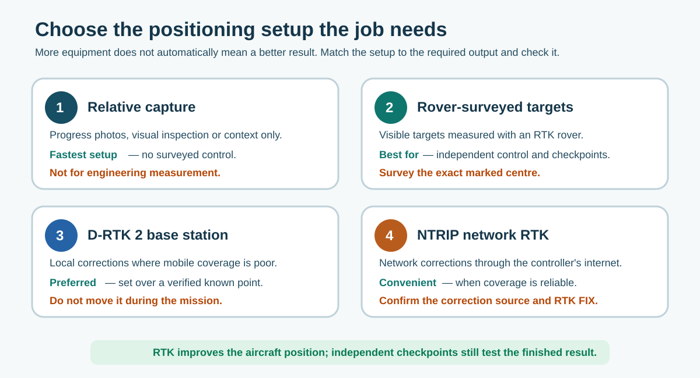

5. On-site positioning options
Choose the simplest positioning method that can meet the job's accuracy and repeatability needs.

Figure 11. RTK improves the aircraft position; independent surveyed checkpoints still test the finished result.
| Option | Use it for | Key limitation |
|---|---|---|
| Relative capture | Progress photos, visual inspection and general context where engineering measurement is not required. | No surveyed control. Do not describe the output as an engineering survey. |
| Rover-surveyed targets | Engineering mapping, repeat surveys, quantities and independent checks. | Targets must be visible, stable and surveyed at the exact marked centre. |
| D-RTK 2 base station | Local RTK corrections, particularly where mobile coverage is poor. | A base on an arbitrary point does not by itself place the result correctly in the project datum. |
| NTRIP network RTK | Convenient RTK corrections where the controller has reliable internet coverage. | Connection, mountpoint and RTK FIX must be confirmed and recorded. |
5.1 Rover-surveyed ground markers
Use temporary or permanent high-contrast targets that can be identified in the source images. Survey the exact centre, photograph it and keep point names consistent.
- distribute control around the work, not in one cluster;
- keep it inside authorised access but outside likely disturbance;
- include separate checkpoints that are not used to adjust the model;
- check visibility, safe access, services, vegetation, water and movement; and
- do not assume a clearly visible feature is stable enough to be control.
5.2 D-RTK 2 base station
Manufacturer guidance: use the current D-RTK 2 guide and supported aircraft workflow.
- Choose a firm, level location with a clear view of the sky, away from large obstructions, strong radio sources, high-voltage lines and large reflecting water surfaces.
- Set the base over a verified known point whenever the output must be tied to the project datum. Measure the required antenna height correctly.
- Level and secure the tripod. Do not move it or change its angle during the mission.
- In DJI Pilot 2, select the D-RTK 2 correction source and link the aircraft/controller.
- Wait for stable GNSS and RTK FIX before survey capture.
- Record the base point, entered coordinates, height type, antenna height, start/end time and RTK status.
GNSS may use ellipsoidal height while the engineering project uses NZVD2016. Do not relabel one as the other. Record the transformation or geoid process used.
5.3 NTRIP network RTK
Confirmed external service information: LINZ PositioNZ Real Time uses NTRIP over the internet and broadcasts NZGD2000 corrections. Registration is required. The team also uses SmartFix; confirm the approved BOPRC profile and current service details internally and never reproduce credentials in this manual.
| PositioNZ item | Current value checked for this draft |
|---|---|
| Host | positionz-rt.linz.govt.nz |
| Port | 2101 |
| Data format | RTCM 3.2, 1-second epoch |
| Expected latency | Less than 2 seconds for 95% of observations |
- Confirm mobile coverage and connect the controller to the approved internet source.
- Select the current, appropriate mountpoint and enter the controlled credentials. Do not put credentials in this manual.
- Confirm the aircraft shows RTK FIX, the home point is correct and the correction age/quality is stable.
- Record the service, mountpoint and RTK status in the flight record.
- If corrections are lost, keep the flight safe and follow Section 3.4. Re-fly the affected area when required.
Remember: RTK/NTRIP improves the aircraft position. GCPs can strengthen or align the model. Independent checkpoints prove the finished result.
NTRIP may reduce the need to use GCPs to adjust a validated lower-risk model, but it does not independently prove the orthomosaic, point cloud or surface accuracy. Retain surveyed checkpoints for engineering quantities, repeat-surface comparison and as-built work unless an approved project specification says otherwise.
5.4 Temporary independent checkpoints
Use temporary checkpoints when the final positional or surface accuracy must be tested independently. A suitable checkpoint might be a small high-contrast spray mark on a completed, still-bare stopbank surface, provided marking is approved.

Figure 12. Conceptual example — not a real BOPRC installation. Place the mark on stable, reasonably flat ground, clear of the crest edge, breaks in slope, loose material, active plant routes and any area likely to be reworked.
- Approve a safe, stable and visible location inside authorised access.
- Paint or place a clear target with one unambiguous centre and a unique point ID. Use a removable target where paint is unsuitable.
- Occupy the exact centre with the RTK rover and confirm a stable FIX.
- Record E/N/Z, NZTM2000/NZVD2016, correction source, quality, time, operator and overview/detail photographs.
- Fly the mission and confirm the target is visible in the source data.
- In Terra, assign it as a checkpoint, not a GCP, and keep it out of optimisation.
- Use its residual with the other distributed checkpoints in the final acceptance record.
One checkpoint is a useful local check, but it cannot describe accuracy across a whole site. The project engineer or survey lead must choose a suitably distributed independent set and an observation method that is accurate enough for the tolerance being tested.
How this becomes an acceptance statement: “The stopbank-stripping surface was checked against [number] RTK-rover checkpoints withheld from processing. Horizontal RMSE = [result] and vertical RMSE = [result]. The output [meets / does not meet] the project tolerance and is accepted for [stated use], subject to [limitations].” Section 11.3 shows a worked example.
Equipment accuracy is not finished-product accuracy. DJI lists centimetre-level RTK positioning for the L2 system components, but the published finished L2 mapping benchmark is 5 cm horizontal and 4 cm vertical at 150 m under DJI's specified conditions. Terrain, IMU, ranging, calibration, trajectory, vegetation, classification and processing all affect the delivered surface. The project's checkpoint results determine whether the output is suitable for its stated use.